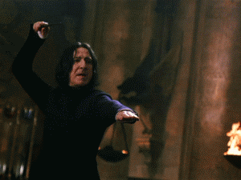

Dobby

Um elfo leal aos amigos e muito corajoso, sempre disposto a colocar-se em situações de perigo quando necessário, mesmo que custe sua própria vida. Suas habilidades incluem: aparatação (mesmo em lugares considerados proibidos), levitação e adulteração de objetos, explosões mágicas e desarmar adversários com um estalar de dedos. No entanto, tem como costume punir-se quando acredita que fez algo “errado”, mesmo que por motivos certos.
Luna Lovegood

Garota inteligente com extraordinária percepção, sem medo de demonstrar quem realmente é. Sempre muito serena – raramente fica ansiosa ou estressada, mesmo em situações difíceis. Suas habilidades incluem extrema capacidade defensiva contra as artes das trevas, duelista altamente componente, talento superior para feitiços avançados, trato de criaturas mágicas, entendimento e tradução runas antigas, alta capacidade de liderança e criatividade.
Severo Snape
Bruxo imensamente corajoso, com profunda capacidade de amar, embora seja descrito como frio, calculista e autoritário. Suas habilidades incluem talento especial para as artes das trevas, domínio de feitiços não-verbais, alta capacidade no preparo de poções, legiminência, ocluminência, transfiguração de animais e objetos, criação e domínio de feitiços incrivelmente difíceis, capacidade de voar sem vassoura e raciocínio lógico avançado.